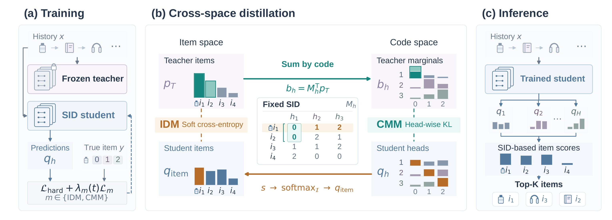
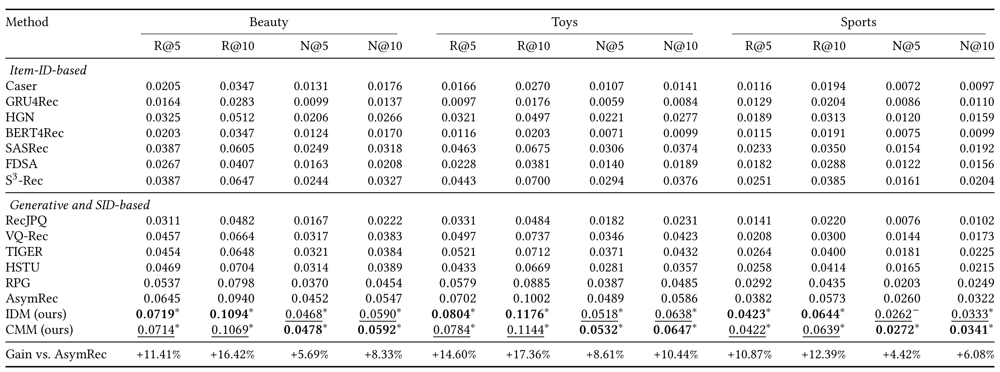
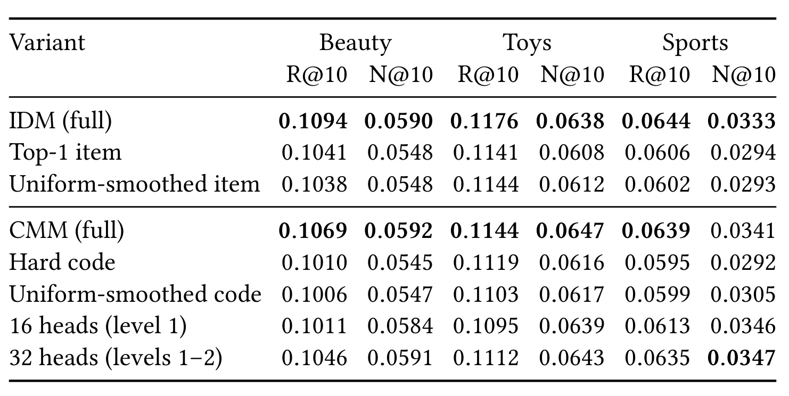
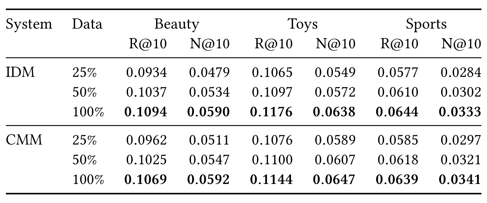
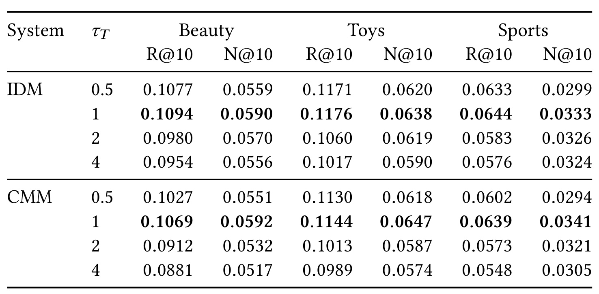
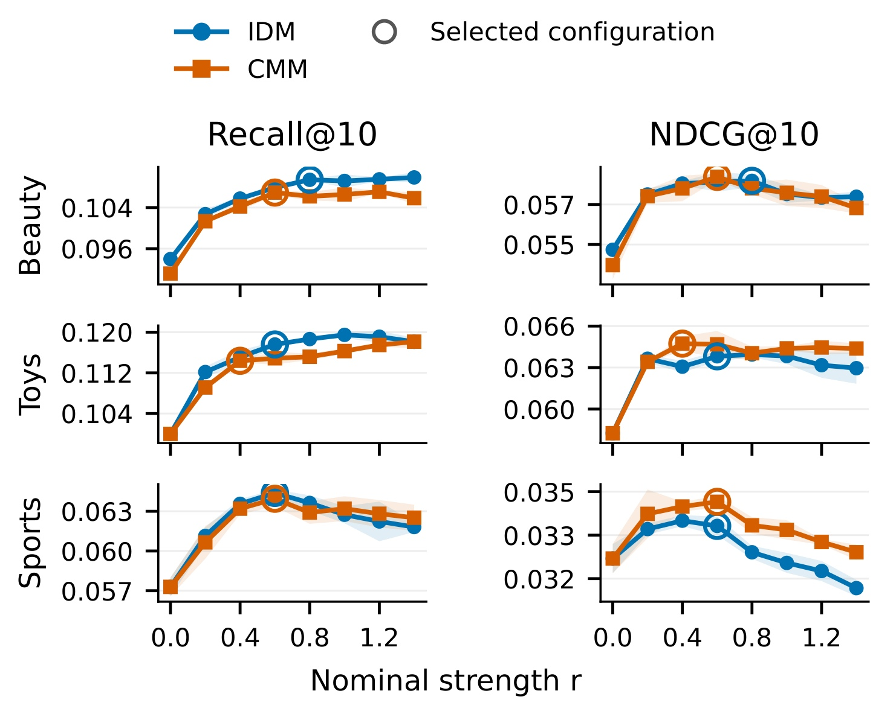
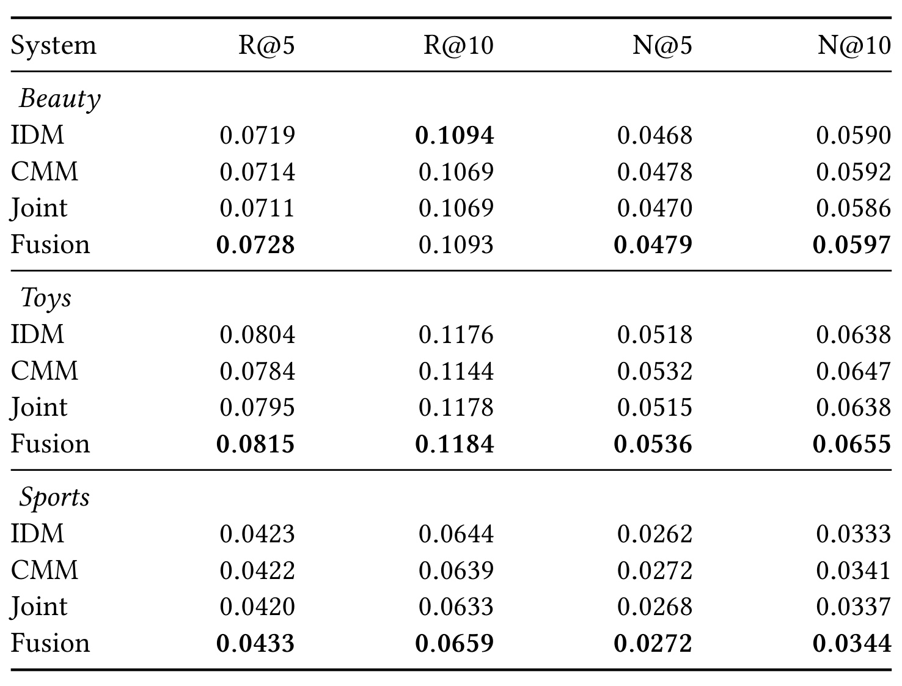

IDM/CMM：并行生成式推荐如何跨物品与编码空间蒸馏
论文：Knowledge Distillation across Item and Code Spaces for Parallel Generative Recommendation
中文译名：面向并行生成式推荐的跨物品与编码空间知识蒸馏
作者：Yixuan Xu、Hailin Liu、Linxiang Peng、Can Yang
机构：香港科技大学；合作机构中国科学技术大学
公开时间：2026-10-23 17:37:55 UTC，arXiv v1；精读日期 2026-10-27
论文入口：arXiv 原文
代码状态：未核验到本文独立代码或项目链接；文中 RPG 实现链接属于复现基线，不能算本文开源。
阅读范围：12 页全文及附录 A–E；数字均为论文报告，未在本地重跑训练。主类别为推荐算法。
目录
1. 背景和问题
语义 ID 推荐把一个物品从独立身份编号转化为多个离散编码。编码来自内容语义表示的量化，因此不同物品可以在某些位置共享值，又在其他位置分离。这种表示让模型有机会跨物品共享统计强度：若两个物品在某个语义子空间接近，它们可以共同训练相应的输出类别。但编码表示本身并不自动告诉模型，对于同一用户历史，未被观察到的替代物品应该具有多大的概率。论文关注的正是表示共享与监督不足之间的缺口。一次下一物品交互只提供一个观测目标，不能直接揭示同一历史下其余候选的相对适配程度。
自回归 SID 模型按前缀逐个生成编码，后一个位置依赖前面已经生成的位置；并行 SID 模型则从同一历史表示同时产生所有位置的分类分布。本文选择后者作为学生，保持并行预测结构不变。这样做有明确的约束：监督信号必须能够同时作用于全部编码头，而不能假设存在一个逐位置展开的教师解码过程。如果直接照搬针对自回归前缀的 token 蒸馏，教师输出接口和学生条件结构都不一致；若再引入可学习标识符，码本也会改变，难以单独识别软分布监督的作用。
核心研究问题：如何把传统序列推荐器对全体物品的历史条件概率，转换为固定语义 ID 并行学生可优化的分布监督，同时保留学生一次并行预测所有编码位置的结构？ 这一问题来自原文引言对硬标签信息不足的分析，以及方法第 3.1 节对教师物品空间、学生编码空间不一致的定义。它要求明确两种空间之间的可计算映射，并说明映射后到底保留什么、丢掉什么。
设用户历史中刚好观察到一件护肤品，硬标签会把这件物品每个位置的编码设为目标。对于另一件语义相近但未点击的商品，以及一件明显不相关的商品，硬标签并没有额外提供二者之间的偏好梯度。序列教师可以根据相同历史为整个目录打分，把二者区分开。教师分布因此包含“暗知识”：不仅知道哪个物品排第一，还知道后续候选的相对概率，以及模型对下一次行为有多大不确定性。这些概率不是新的真实用户标签，而是另一个模型对现有训练数据的归纳；所以它可能有用，也可能带入教师的偏差。
物品概率不能直接与编码概率逐元素比较，因为一个维度代表物品身份，另一个维度代表某位置的共享编码类别。固定 SID 映射提供两个方向。一个方向先读取学生为每件物品各个编码赋予的概率，将它们合成为物品分数，再在有效目录上归一化，即 IDM。另一个方向把教师概率按每个位置的编码分组累加，得到每头的软目标，即 CMM。前者从学生编码预测回到物品空间，后者把教师从物品空间投影到编码边缘。它们都不需要修改码本，也都能与原有硬标签训练共存。
这里“有效目录”很重要。编码类别的笛卡尔积通常包含大量没有对应真实物品的组合。IDM 只在真实目录物品之间分配概率，因此不同头的贡献通过有效组合结构发生耦合；CMM 则分别对每个编码头归一化。即使输入来自同一个教师，优化效果也可能不同。论文的理论分析把这种直觉写成梯度恒等式，避免把两种方法简单概括成“物品监督更强、编码监督更细”。真正可验证的机制是学生侧概率归一化项变化，而非教师额外提供了两套不同知识。
本文也有清楚的研究边界。它不是重新设计大模型架构，不训练自然语言生成器，也没有在线流量实验。学生使用文本嵌入构造固定 SID，但主贡献是推荐训练目标。推理阶段教师可以移除，所有编码头同时输出；不过评测仍然对全目录物品计算 SID 聚合分数并排序，因此“并行生成”不能自动理解为亚线性检索，也不能当作已解决百万级物品召回的服务成本。该区分决定了方法适合首先在哪一段系统中验证。
对于已有序列教师和固定内容码本的推荐团队，论文的实用性在于提供了可插拔的迁移接口。团队可以保持学生结构、码本与数据不变，只替换软监督空间，观察召回覆盖和头部排序的取舍。这比同时更换 tokenizer、骨干和解码算法更容易定位收益来源。另一方面，实验教师 SASRec 与学生拥有不同表示和训练配置，学生从教师学习后优于某个基线，并不意味着教师总是更强，也不意味着任何模型分数都值得蒸馏。后文教师数据量实验恰好显示，软目标不可靠时，头部排序指标可能下降。
从更宽的研究脉络看，这项工作把生成式推荐中的两个经常混在一起的问题拆开：编码表示决定可以表达哪些共享关系，监督目标决定哪些概率差异会进入训练。本文固定前者，研究后者；这让结论较为干净，也限制了外推范围。若未来联合学习码本，分组集合会随参数变化，教师边缘不再是固定映射下的常量，原文推导中的若干前提必须重新检查。若换成扩散或掩码生成学生，位置预测还可能依赖不同噪声状态，不能仅把这里的边缘 KL 原样移植过去。
原文的相关工作也帮助界定贡献：传统序列推荐学习历史到物品的映射，既有生成推荐蒸馏可能依赖前缀或可学习标识符；本文针对固定编码的并行预测接口展开。在阅读时，应把共享内容语义、协同序列偏好与监督概率分配分开。内容嵌入决定物品如何被编码，教师根据交互历史给出概率，辅助目标把概率转换成学生更新信号。这三个来源各自带有假设，也可能分别成为后续系统迁移的瓶颈。只有把它们分清，才能判断收益来自更好内容表示，还是来自软监督本身。
2. 方法
2.1 固定语义编码连接物品空间与并行预测
目录包含 N 件物品，每件物品有 H 个固定编码位置，每位置有 K 个类别。本文学生基于 AsymRec，使用 3072 维 text-embedding-3-large 固定物品表示，经过 Kronecker residual bridge 转为 448 维序列表征。量化结构为 16 个子空间、每子空间 3 个残差层，所以是 48 个输出头，而不是长度为 3 的普通单路 SID。每头预测 256 类，所有头共享历史编码器；学生有效 logits 已包含温度 0.03。
符号解释：这里 x 是历史，h 是输出位置，c 是编码值，u 是未缩放输出，τS 是学生温度。下一物品 y 对应硬标签目标为各头交叉熵平均： z 是固定编码。平均操作让损失不随头数简单线性放大。学生评测分数使用物品对应编码的平均对数概率；因为每个头的 log-partition 对同一历史下所有候选相同，所以排名等价于对应 logits 的平均。冻结的 SASRec 教师则以全目录交叉熵训练，产生各物品分数 a，再经教师温度归一化：
M 是 N×K 的固定分配矩阵，每行恰有一个 1；它负责 gather 学生编码分数，也负责 scatter-add 教师概率。这是跨空间迁移唯一需要的身份接口。默认教师温度为 1；它与学生有效 logit 温度不同，不能混用。

Figure 1 左侧说明训练仍然由硬标签与一个辅助目标构成，中间展示两条空间转换路径，右侧展示只保留学生的评测过程。图中示例只有 3 个编码头，是概念演示，实际实验是 48 头。绿色箭头沿固定编码分组求和，把若干物品的概率汇总为每位置边缘；棕色箭头从学生编码输出读取每件物品的完整编码分数，再在目录内 softmax。两条路径方向相反，但固定 SID 表没有任何训练更新。一个物品在某头与其他物品共享值，并不妨碍另一个头把它们拆开，所以多个边缘能从同一教师概率得到不同监督。图右侧的柱状物品分数也提示，预测完编码分布后仍有目录级打分步骤，不能将这个结构图读成无需枚举候选的检索算法。训练框内的 m 取 IDM 或 CMM，主实验是分别训练两个学生，并非默认同时叠加两项损失；联合训练只是后续对照。读取此图时还要区分冻结教师与共同历史输入：学生不是在模仿教师隐藏层，而是在相同监督位置上对齐教师输出概率。教师预测必须对应该位置的精确历史前缀，否则未来交互泄露会让蒸馏收益失去意义。图中的有效物品目录同时约束 IDM 的归一化和最终排名，这使训练目标与评测评分相接，但没有扩大学生的加性分数表达族。
从图的训练输入还可以看到，真实目标与教师软目标承担不同职责：真实下一物品仍逐头提供确定类别，教师只作为辅助分布来源。学生不是先生成一个硬编码串再接受打分，而是在训练时保留每头完整概率，才能对目录组合或编码类别计算可微损失。因而实现时若只缓存教师最高分身份，或过早把学生输出取最大值，就无法复现图中两条分布匹配路径。
2.2 IDM 在有效目录内匹配物品分布
IDM 对每件物品读取所有头的 assigned logits 并平均，然后在有效目录上形成分布： s 是物品聚合分数。把 logits 展开为头概率后，未归一化项等于所分配编码概率的几何平均。不能随意改成概率乘积，因为原文用 1/H 平均，整体尺度会影响目录 softmax。学生物品分布与教师物品分布使用软交叉熵：
它不只奖励真实下一物品，也让教师认为相近的其他候选参与梯度。改变一个编码 logit 会同时改变共享该编码的全部目录物品分数，而 softmax 又把这些候选与其他有效物品放在共同分母中竞争。由此，多头通过有效目录的组合结构间接耦合。若某种编码组合没有任何真实物品，它不会被当作独立目录候选纳入归一化。
这个目标也不意味着学生能拟合任意教师物品分布。学生的分数仍是多个位置项的加和，固定码本约束了表达能力。附录指出完整 SID 可能碰撞：Beauty、Toys、Sports 分别有 3、3、25 个碰撞组，涉及 6、12、67 件物品。共享完整 SID 的物品得到完全相同的学生分数，但仍作为不同目录条目进入归一化。因此，教师对这类物品的身份区分无法完整恢复。目录 softmax 提供竞争结构，却不会凭空消除编码信息损失。
2.3 CMM 投影教师边缘并解释归一化差异
CMM 把教师每件物品的概率，累加到它在某个头的编码类别中，构造严格归一化的边缘目标： b 是教师编码边缘，未被目录使用的编码值获得零教师质量。每件物品每位置只贡献一次，因此一个头的边缘和为 1。CMM 直接监督学生各头 256 类分布；它平均各头 KL，梯度仍通过共享编码器相互影响。“每头独立归一化”并不等于网络参数完全独立，只是概率分母不跨位置或物品构造。
原文用联合分布解释这种投影的能力边界。令教师完整编码元组分布为 P，学生因子化分布为 Q，则： TC 是教师编码分布的总相关性，对固定教师和码本而言与学生参数无关。CMM 优化联合 forward KL 中学生可改变的部分，最优乘积分布匹配所有边缘；它没有恢复跨头联合相关性。即便所有 q 等于 b，若教师编码位置之间相关，TC 依然不为零。把这个命题写成“边缘匹配等价于无损联合匹配”会完全误读理论。
更进一步，两种损失的共同线性项都由同一教师边缘驱动，差异来自学生归一化： 若定义目录诱导编码边缘 q̄h=Mhᵀqitem，就能直接比较 logit 梯度：
IDM 比较的是目录诱导边缘，CMM 比较的是原始头分布。二者共享教师负项，却有不同学生正项。这提供了比“一个学全局、一个学局部”更精确的说明；实验中 Recall 与 NDCG 的差别是经验结果，不能仅从恒等式推导出普遍性能排序。
2.4 校准梯度尺度并分别训练
每种辅助目标都与硬标签共同训练，蒸馏系数由初期梯度量级校准后固定： m 代表分别训练的 IDM 或 CMM，r 是名义强度，C 是梯度范数比中位数，R 是 ramp 更新数。校准使用单独初始化学生，先训练 10 个硬标签批次，再统计后续 20 批全部可训练参数梯度。它避免直接用相同数值系数比较尺度不同的损失，但并不保证整个训练过程梯度始终平衡。蒸馏约在 10 个 epoch 内逐步引入，Beauty、Toys、Sports 的 ramp 分别为 1048、903、1515 步。
学生使用 AdamW、batch 256、最多 150 epoch、10000 步学习率 warm-up 与余弦衰减、梯度裁剪范数 1。验证集 NDCG@10 选择检查点，耐心值 20。所有学生变体共享固定 SID、同一预训练教师检查点与随机种子初始化；每个选定超参和校准系数在 3 次运行复用。不同目标的学习率通过验证选择，例如 Beauty IDM 为 0.005、CMM 为 0.02，所以敏感性分析必须使用学习率匹配的无蒸馏对照。教师训练与标定属于额外训练成本，移除推理教师并不使这些成本消失。
3. 实验结果
3.1 数据、划分和评测协议
实验使用 Amazon Reviews 2014 的 Beauty、Toys and Games、Sports and Outdoors 三个 5-core 子集。用户数依次为 22363、19412、35598，物品数为 12101、11924、18357，交互数为 198502、167597、296337；训练监督位置数为 131413、109361、189543。每用户最后一次交互作为测试，倒数第二次作为验证，更早事件参与训练；历史最多 50 个物品，测试历史包括已观察的验证交互。附录说明只验证原始 5-core 条件，不再额外过滤或去重，同时间戳保留原顺序。这些细节影响数据复现，不能只写“标准 leave-one-out”。
初始滑动窗口可监督全部有效下一物品位置，后续窗口只监督最后目标，避免重复监督。蒸馏目标与每个监督位置的精确历史前缀对齐。评测使用 Recall 与 NDCG 的 5、10 截断；AsymRec、IDM、CMM 全目录排序，不采样负例，也不屏蔽用户历史已经交互的物品。RPG 使用同一物品目录上的原发布图引导解码。全目录、历史物品处理、解码候选覆盖都影响结果，因此不能把表中数字与采用采样负例或历史屏蔽的外部工作直接对齐。
3.2 主结果与比较口径

Table 2 最有说服力的对照是同一固定 SID 学生的硬标签 AsymRec、IDM 和 CMM。Beauty 的 Recall@10 从 0.0940 提到 IDM 0.1094，Toys 从 0.1002 到 0.1176，Sports 从 0.0573 到 0.0644。三域平均相对提升为论文报告的 15.39%；这是相对比例，不是增加 15.39 个百分点。CMM 的 NDCG@10 分别为 0.0592、0.0647、0.0341，对照 AsymRec 的 0.0547、0.0586、0.0322，平均相对提升为 8.28%。IDM 在三域两个 Recall 截断都优于 CMM，CMM 在两个 NDCG 截断都优于 IDM，因此本文的覆盖与头部顺序取舍有一致经验支持。但这种一致性只覆盖三份同源数据和当前模型，不是关于损失函数的普遍定理。表中 Gain 行对每列选取两种方法的较优均值，也不能误解为存在一个模型同时实现整行全部最优值。显著性星号对应按用户进行的双侧配对 t 检验，阈值为 0.05；Sports IDM 的 NDCG@5 为 0.0262，对照 0.0260，标为不显著。把它连同其他提升一起写成“所有指标显著提升”是不准确的。另一个重要限制是 RPG、AsymRec、IDM、CMM 为本文复现并报告 3 次运行均值，其余 Caser、SASRec、TIGER、HSTU 等数字引用 RPG 原表，不能把整张表叫作统一环境复现。尤其表中的 SASRec 行是外部基线来源，不能直接将其数值当作本实验所训练教师检查点的效果。论文在受控学生对比上有较强证据，在横跨全部外部架构的公平性上证据较弱。比较时还应注意 RPG 的解码算法与全目录打分学生不同，这使算法效果和候选搜索方式共同进入最终数字。
排名指标还需要按定义区分：每位用户只有一个测试目标时，Recall主要判断目标是否进入截断列表，NDCG还按出现位置折损。于是目标从列表外移动到第十名能增加召回，却未必带来很大的头部排序改善；列表内已有命中向前移动则更直接反映在NDCG。本文两种目标的指标取舍与这一区别相容，但没有提供逐用户迁移矩阵来证明究竟哪些用户或候选发生了这种变化，因此不能据总体均值补出个体行为解释。
3.3 软标签和残差层消融

Table 3 先用 Top-1 item 替代 IDM 的完整教师分布，再用熵匹配均匀平滑对照，以区分“只是多了一个目标”与非均匀软概率的作用。Beauty IDM 的 Recall@10 为 0.1094，Top-1 为 0.1041，平滑目标为 0.1038；NDCG@10 从 0.0590 降到两种对照的 0.0548。CMM 也比较每头最大概率硬编码以及均匀平滑编码，Beauty Recall@10 从 0.1069 降至 0.1010 和 0.1006。这说明教师对替代物品或编码类别的细粒度概率分配具有价值，不能只保留第一选择，也不能单靠增加目标熵解释收益。原文让平滑参数匹配训练集教师目标平均熵，并对修改目标重新做梯度校准，减少了损失尺度混淆，但学习率与名义强度仍沿用父方法；这并非每种消融都经历完整独立超参搜索。后半表只改变 CMM 蒸馏头覆盖，原始硬标签始终覆盖全部 48 头。16 头代表每子空间第一残差层，32 头代表前两层，48 头代表完整三层；不能把它解读成删除学生输出头或减少骨干容量。Recall@10 在三域随蒸馏覆盖扩大而提升，说明细残差区分有助于检索；NDCG 并不单调，Sports 32 头为 0.0347，高于完整 CMM 0.0341，16 头 0.0346 也略高。这提示稀疏域的头部排序可能更依赖粗中粒度语义，最后残差层的教师监督也可能引入噪声。该表没有给出消融差异的显著性检验，因而这种机制解释应视为与结果相容的假设。附录 Table 8 补充截断 5 的结果，Sports 16 头 NDCG@5 为 0.0281，亦高于完整 0.0272，使例外不只存在于一个截断。
另一个有助于理解对照的细节是，编码硬目标来自每头边缘的独立最大值，不要求这些最大值共同形成合法目录物品；教师Top-1物品则必然对应一条合法完整SID。二者虽然都是硬目标，但支持集约束不同。均匀平滑也只是把其余类别等量分摊，不能恢复教师对近邻候选的非均匀偏好，所以匹配平均熵并不匹配概率结构。
3.4 教师质量与概率温度

Table 4 让学生始终使用完整数据，只缩减教师监督行到嵌套 25%、50%、100%，使用固定 Seed-42 排列抽样，并保留每行的完整历史。两个蒸馏目标在三域的 Recall@10 与 NDCG@10 都随教师数据增加而改善，说明更多教师训练监督能在学生数据不变时继续产生收益。与此同时，弱教师并不保证正迁移：Beauty IDM 的 25% 教师得到 NDCG@10 0.0479，低于学习率匹配无蒸馏对照 0.0547；Sports IDM 为 0.0284，低于 0.0322，CMM 也只有 0.0297。甚至一些 50% 教师结果仍低于对应无蒸馏排序基线。这里学生沿用完整教师所选蒸馏系数，所以失败也可能包含教师变弱后权重不合适，而不只是教师分布本身。它提示工程中必须随教师变化重新校准和验证，不能把冻结教师当作永久可靠的标签来源。这些控制比简单展示“强教师优于弱教师”更有价值，因为它们揭示了召回改善与头部排序受损可以同时存在。
教师数据子集的嵌套设计减少了两组样本完全不同造成的混淆，但没有切断数据量、教师优化质量和概率校准程度之间的联系。因而应把趋势解释为整个教师训练监督配置的影响，不要直接宣称更大教师参数规模带来收益；本实验并没有改变教师架构或参数量。

Table 5 使用同一个完整数据教师检查点，只改变温度为 0.5、1、2、4。温度不改变教师物品排序，只改变概率质量的集中程度，因此它直接检验蒸馏是否依赖概率分配。所有域和两个目标的 Recall@10、NDCG@10 均在温度 1 达到表中最高均值；Beauty CMM Recall@10 从温度 1 的 0.1069 降至温度 4 的 0.0881，后者甚至低于匹配无蒸馏对照 0.0912。过尖温度 0.5 也不如默认温度，表明只强调头部物品与过度均匀化都有代价。这个结果反驳“教师排序相同，所以训练知识相同”的直觉。不过本文只检查有限温度集合，并固定其余配置；不能据此认定温度 1 在其他码本、教师或数据域都最优。复现时还应分清教师温度和学生固定有效 logits 温度，二者分别控制目标分配与学生分类尺度，改变任何一个都可能影响校准后的相对梯度。
温度实验还提示，离线教师评测只记录排名是不充分的。两个教师即使具有相同候选顺序，也可能在跨空间投影后形成差异显著的编码软目标。因此复现时应同时记录物品分布熵和投影边缘熵，判断变化是来自目标整体变平，还是某些编码分组吸收了过多质量。
3.5 蒸馏强度与融合

Figure 2 横轴是名义强度 r，范围从 0 到 1.4，使用各自固定校准尺度把它转换为实际辅助系数；阴影是 3 次运行的一个样本标准差，圆环标出验证选择配置。正强度普遍改善 Recall@10，但 NDCG 对大权重更敏感：Sports IDM 在中等强度后下降，高强度时可低于无蒸馏 NDCG 水平；Toys CMM 的 NDCG 峰值出现在比 IDM 更低的强度附近。因此，不能因为召回曲线较平就把蒸馏权重一直提高。Beauty 两条曲线的零点不同，因为对应学习率不同；Toys 和 Sports 的零点重合。图中这些控制说明，讨论辅助损失收益时必须比较学习率匹配的零强度基线，避免把调参差异归因于蒸馏。图未提供每个点的精确数值表，本文只解读形状和原文描述，不从像素估算额外精确提升，也不把标准差带当作置信区间或显著性检验。
圆环表示验证集选出的设置，并非根据测试曲线逐点挑选最大值，这一点有助于避免把测试集当作调参集。与此同时，强度网格仍有限，曲线只表明当前搜索范围内的稳定区与退化区，不能推出连续参数空间里的精确最优点，也不能外推到完全不同梯度尺度的实现。

Table 6 把一个学生同时加入两损失的 Joint，与两个分别训练学生的 Fusion 分开。Fusion 配对相同初始化 seed 的 IDM 与 CMM，各以 0.5 权重平均目录排名原始分数，没有额外重训练或分数校准。它在三域均获得最高 NDCG@10：Beauty 0.0597、Toys 0.0655、Sports 0.0344；Toys 与 Sports 的 Recall@10 分别为 0.1184、0.0659，也超过单模型。Beauty 融合 Recall@10 为 0.1093，略低于 IDM 0.1094，所以“融合所有指标都最好”依然不成立。Joint 不稳定超越最佳单模型，Beauty NDCG@10 0.0586 低于两个独立目标，Sports Recall@10 0.0633 也低于二者。这与两种归一化学习到互补预测相容，但还不足以证明共享梯度冲突就是唯一原因；联合方法也受到学习率、混合比例和搜索预算影响。附录联合目标先按各目标校准，再对组合梯度校准，混合比例候选为 0.25、0.5、0.75，联合强度候选为 0.4、0.6、0.8。实际最优融合需要存储并运行两个学生，线上算力与模型管理成本增加，不能把该表当作单模型免费收益。若用于业务召回，还需比较只运行 IDM、只运行 CMM、双学生融合在相同延迟预算下的候选覆盖与排序表现。
在读消融结果时还需保留一个实现条件：各头独立选出的最大概率编码未必组成真实目录里的合法物品 SID，因此 Hard code 不等价于教师 Top-1 item 的编码。这进一步说明两个对照不能简单混为同一种伪标签。
需要特别区分训练中联合与部署时融合的资源口径：联合训练只有一次学生前向并且硬标签损失只应用一次，两个辅助梯度在共享参数上叠加；分数融合则保持两个独立模型的优化轨迹，到评测时才合并输出。两者的模型数和训练选择空间不同，不能仅看融合均值较高就认定组合算法更有效率。若要在生产预算内判断是否采用融合，至少需要补充相同吞吐或相同延迟约束下的对照。
3.6 哪些实验尚未给出
原文训练在 RTX 5880 Ada、FP32 下进行，但没有完整的训练吞吐、教师缓存成本、全目录 softmax 显存、在线 p99 延迟或百万物品规模曲线。学生基于固定文本嵌入，码本碰撞也未通过额外身份残差解决。三域都是较早 Amazon 电商评论数据，缺少广告多目标、短视频高频反馈、新物品动态入库、长尾冷启动和在线随机试验证据。因此可确认的是当前离线协议下蒸馏有效，而不是生产检索效率、跨域稳健性或业务收益已经成立。附录提供了相当具体的超参和证明，有助于复现；独立代码未核验则仍增加落地成本。
4. 总结
本文最清晰的贡献是给固定 SID 并行推荐一个可解释的蒸馏接口。物品教师不必改成编码教师，学生也不必变成自回归生成器；借助固定映射，就可以在目录分布或编码边缘两个空间接入同一套软知识。理论上，两种目标的教师项相同，学生归一化不同；经验上，IDM 更有利于当前实验的 Recall，CMM 更有利于 NDCG。这个结论比“蒸馏能提升推荐”更具体，因为它告诉读者在哪个数学接口上改动，以及为什么两个看似类似的目标不能互换。
对推荐工程，最值得迁移的是先固定变量再比较目标空间。若已经有可靠的序列教师，可以保持码本、学生骨干、种子和数据划分一致，做硬标签、IDM、CMM 三组实验，再按召回覆盖和头部排序分别选择。码本统计应包含完整 SID 碰撞、每头占用率、热门编码聚合质量、长尾物品是否被教师概率淹没。尤其不能只看平均指标：Sports 残差层消融提示不同稀疏程度可能需要不同头权重。按活跃程度、长尾程度、新旧物品切片，才能判断额外细编码监督是在提供区分还是复制噪声。
对大模型和个性化系统，方法提供了一个结构化输出蒸馏视角：教师分布位于对象空间，学生输出位于共享离散属性空间，必须先决定是在合法对象集合内归一化，还是只匹配属性边缘。这个思想可能适用于固定工具集合、结构化检索键和个性化离散记忆，但属于迁移推断，本文没有直接实验。若任务依赖属性之间的强相关性，CMM 的乘积分布会遗漏联合结构；若合法对象数量很大，IDM 的全目录归一化又会成为成本瓶颈。选择目标空间必须同时考虑表达能力和计算预算。
局限至少包括四个层面。第一，CMM 不能恢复跨编码位置的全部相关性，而 IDM 的加性分数和碰撞码也限制物品区分；两者都没有摆脱固定表示容量。第二，教师带有训练数据偏差，25% 数据实验显示负迁移，冷启动与流量漂移下风险尚未测量。第三，全目录评分和蒸馏目标构造的成本未给出规模评测，并行编码输出不等于亚线性召回。第四，主表大多数外部基线来自引用，只有部分复现，且没有在线试验或本文独立代码，需谨慎评价跨系统优势。上述局限分别影响方法表达、训练可靠性、系统扩展和证据可信度，不能仅写成笼统的“未来需要更多实验”。
后续可以沿三条有判别力的实验推进。第一，先复现相同历史前缀与全目录无历史屏蔽协议，记录按用户配对的指标分布，核对 Sports 不显著项和弱教师负迁移是否稳定；若复现协议不同，先标注口径不可比。第二，在固定总算力下测教师预计算、概率投影、IDM 目录分母、CMM 每头 KL 与最终评分的吞吐和显存，再决定是否采用候选采样或近似归一化，并验证这些近似是否破坏当前恒等式条件。第三，比较残差层自适应权重、按教师置信度门控蒸馏与常数权重，对稀疏用户及长尾物品单独评估，防止总体收益掩盖受损群体。
若继续研究联合目标，还应检查两个归一化梯度的方向、范数与训练阶段变化，而不只是把两个 loss 相加。图表已显示独立优化后融合可能更好，但双模型代价较高；把融合教师再压回一个学生，是值得验证的工程设想，不能提前当作本文成果。同样，联合学习 tokenizer 或迁移到扩散推荐都需要重新处理映射随参数或噪声状态改变的问题。本文适合作为这类工作的数学起点：先写清教师支持集、学生概率族、映射规则和归一化条件，再讨论性能。只有这些条件可核验，实验中的收益与失败才有可解释的边界。